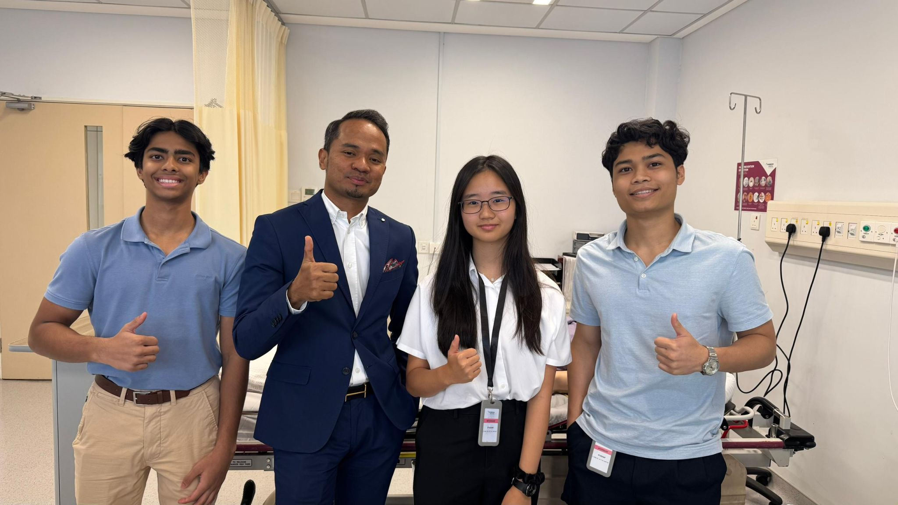
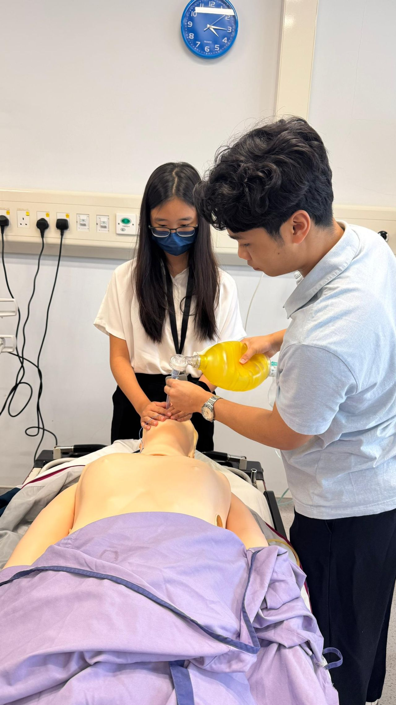

Interning at the Neurology and Emergency Department at Thomson Hospital Kota Damansara
This summer, I was fortunate enough to have shadowed and interned at Thomson Hospital in Kota Damansara. Being
attached to Dr Hadi in the Emergency Department and Dr Tan in the Neurology Department gave me super useful
insights into the healthcare field, especially for those on the frontlines.
When I first walked into the hospital, I really didn't know what to expect.
I thought I’d mostly just be observing, standing in the corner, taking notes,
and trying not to get in anyone’s way. And because I don't have a medical degree,
that was very much the case, but what I didn’t expect was how alive the hospital would feel.
It was a very strange mix and oscillation of being chaotic and strangely calm,
By the end of my two weeks in the ER, I had a full logbook of pretty much all
the common diseases: heart attacks, dengue, appendicitis, strokes, influenza... The list
goes on and on. It would be an understatement to say that I've learned a lot. Even within
just two weeks, I feel that I've learned more about the human anatomy and pathology than I
have in my three years of Biology lessons. Perhaps it is because medicine is purely focused
on human biology, and a standard school syllabus doesn't usually go into the specifics of
diagnosing disease. I also became a lot more well-versed in reading doctor
handwriting on patient charts and all the abbreviations that were used. (It made a lot more sense
when someone was diagnosed with AGE (acute gastroenteritis, not the natural process of getting older)!)
Thank you to Dr Hadi for finding time in your busy medical-director schedule to give us
short crash courses on anginas and intubation! Also, thank you to Saira for keeping me company in the
quieter hours!
The neurology department offered a really different perspective into healthcare. It was a lot more about
long-term patients and building a relationship with them. A lot of these people had been coming to Thomson's
for months to years, usually to follow up after a stroke or brain surgery. Morbid as it may be,
it was quite fascinating to see the brain scans of stroke patients immediately after diagnosis and
six months into recovery. I find it incredible that the brain
was capable of regenerating itself in this way. Thank you to Dr Tan for allowing me to attach for two weeks!
I am endlessly grateful to have had this opportunity to witness
what being a healthcare provider is really like.
I look forward to applying the knowledge and
experience I’ve gained to make a meaningful impact in the future!
Photos:

